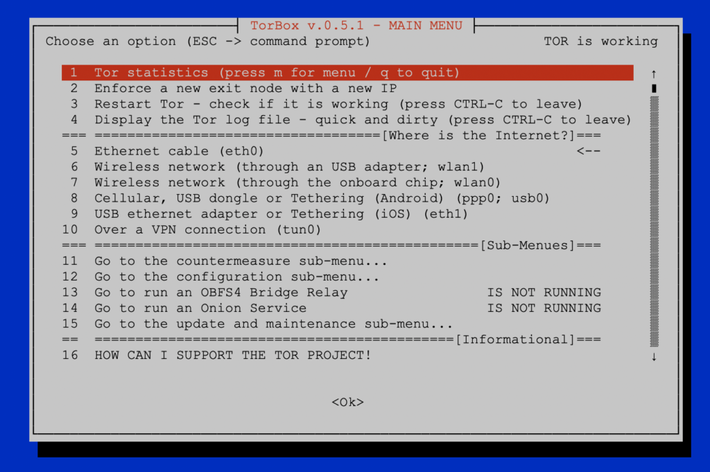

Honestly, TorBox v.0.5.0 was not one of our finest. When I started to fix some known problems and bugs almost a month ago, I found so much more. It was time to go into details and especially to fix to code added with version 0.5.0 – row by row. This version should run more reliable and stable than the versions before. Nevertheless, we also added and updated some of the features. However, once again, it shows also the importance of user feedback. Please report to us your problems and found bugs. We also need to know what you would like to see next and which features you request? With the TorBox GitHub repository, it is straightforward for everyone to report issues or change the code and propose it in a pull request.
TorBox Image (about 1 GB): v.0.5.1 (19.07.2022) – SHA-256 values
TorBox Menu only: v.0.5.1 (19.07.2022) – SHA-256 values
Since we had to install additional software packages and update the configuration files, it is necessary to use the new image or reinstall TorBox using one of our installation scripts.


Changelog: v.0.5.0 –> v.0.5.1 (19.07.2022)
- Update: The system is based on Raspberry Pi OS “Bullseye” lite (64 bit) with Linux Kernel 5.15.32 and Tor version 0.4.7.8. This version fixes several bug fixes, including a high severity security issue categorised as a Denial of Service. Everyone running an earlier version should upgrade to this version. Also, congestion control should improve traffic speed and stability on the network once most exit nodes upgrade. You can find more details about it in proposal 324 in the torspec.git repository. All installation scripts are updated to work with Raspberry Pi OS “Bullseye”, Debian 11 and Ubuntu Server 22.04 LTS. Additionally, we also updated TorBox’s internal list of OBFS4 bridges.
- Update: The installation script for Raspberry Pi OS had to be updated to work with the new Raspberry Pi OS images released in April. Also, starting with this version, TorBox will be only tested on the 64 bit version of the respective OS (Raspberry Pi OS, Debian and Ubuntu).
- Update:
vitorfrom nyxnor’s onionwash repository. - Update: the additional network driver so that they work with the new Linux kernel (unfortunately, Fars-Robotics didn’t update their network driver since October 2021).
- New:
websshreplacesshellinabox, which seems it is not maintained anymore. Withwebssh, users don’t need a ssh client because every web browser can now jump in as a ssh client. A user on a wifi-client can type 192.168.42.1, someone on a cable-client 192.168.43.1. This functionality comes with a certain risk becausewebsshis not encrypted (this would need a self-signed certificate, which the browser doesn’t support easily). However, this shouldn’t cause any problems because the TorBox AP and its wlan or the connection cable should be controlled by you. By default,websshcannot be accessed from the Internet. If you seek maximum security, you still can keep using an ssh client and even deactivate thewebsshfunctionality in the Configuration sub-menu (entry 11). - New: There is a new way to pass through captive portals by SPOOFING the MAC address of a device that passed the captive portal successfully. Tests showed that some captive portals could be better overcome with the old method (TUNNELLING), some function better with SPOOFING and some need combined both ways. See here for more information.
- New: Starting with this version, TorBox randomises the MAC addresses on
wlan0,wlan1,eth0andeth1by default. You can change that behaviour and set your own MAC address in the Configuration sub-menu (entry 8). - Fixed: TorBox will not try to back up the OBFS4 Bridge Relay configuration if there is no such configuration.
- Fixed: It is impossible to simultaneously run the countermeasure against tightly configured firewalls and Snowflake, Meek and the OBFS4 Bridge Relay. This fix will prevent such a setting.
- Fixed: A bug broke the functionality on
ppp0and usb0. Also, before executingpon, TorBox will check ifpppdis already working and shut it down. - Fixed: Due to a little bug in the script, The menu entry, which should only activate OBFS4 bridges, which are ONLINE, fails to activate the OBFS4 mode properly. This bug prevents TorBox from deactivating the OBFS4 lines in the tor configuration file. Both are fixed.
- Fixed: Onion Service name bug (fixed by nyxnor).
- Improved: To prevent future bugs in the releases, a shellcheck Github action will be triggered with every pushed commit on the master repository.
Improved: Local DNS resolution will be solely resolved through tor. This means that TorBox will not be able to resolve DNS requests from the local terminal if tor is not running. However, some functions, like Snowflake, Meek and time synchronisation, need clearnet DNS resolution to work without a running tor, but in this case, clearnet DNS resolution is explicitly activated for that purpose, and the user is asked or informed beforehand. DNS resolution from clients will always be made through tor, regardless of the settings. With the following commands in the terminal, local clearnet resolution can be set on/off (we will add that later in a “toxic “menu):
# Turn local clearnet DNS resolution on
sudo iptables -t nat -D OUTPUT -p udp --dport 53 -j DNAT --to 127.0.0.1:9053
sudo iptables -t nat -D OUTPUT -p tcp --dport 53 -j DNAT --to 127.0.0.1:9053
sudo systemctl restart dnsmasq
# Turn local clearnet DNS resolution off
sudo systemctl stop dnsmasq
sudo iptables -t nat -A OUTPUT -p udp --dport 53 -j DNAT --to 127.0.0.1:9053
sudo iptables -t nat -A OUTPUT -p tcp --dport 53 -j DNAT --to 127.0.0.1:9053
- Improved: The use of Onion Services, sharing folder and TFS. For example, the sharing folder functionality and TFS can use every folder inside
/var/wwwregardless of the name of the Onion Service. This gives the possibility that an Onion domain namedx.onioncan share the folder/var/www/to_be_shared, and at the same time, TFS can control up- and/or downloads to/from the same folder using the Onion domainy.onion. - Improved: TFS can be started multiple times with different Onion domains. The file list is now alphabetically sorted. The message below the top banner can now display multiple lines (separated by a
\n). You can go into a sub-folder if you click on them, and if you start an upload in such a sub-folder, the uploaded files are placed there. Selecting multiple files and folders is now supported – they will be downloaded and compressed in a.zipfile to the local client. - Improved: Resetting Tor and enforcing a change of the permanent entry node in the update and maintenance sub-menu doesn’t deactivate the bridge and bridge relay mode anymore.
- Improved: Turning
systemd-journald.serviceoff by default to further reduce the logs.
• • •
We need your feedback!!
We hope this version pleases you. However, we are dependent on feedback. It is not just about fixing bugs and improving usability, but also about supporting additional interfaces and hardware in future releases:
- What do you like?
- What should be improved (why and how)?
- What would you like to see next? Which features do you request?
With the TorBox GitHub repository, it is straightforward for everyone to report issues or change the code and propose it in a pull request. Because we continue to travel around, it sometimes needs more time to address the issues and proposals.
For future versions, it is essential that we know what you need and want to see from the Onion Services implementation. Please feel free to use the discussion forum to tell us your needs.
• • •
Known problems and bugs
- BUG: TorBox will not automatically add a bridge when that option is chosen in the Countermeasure sub-menu. There are two reasons:
.- It seems that version 0.4.8 of mechanize will not be correctly installed –> we had to switch back to version 0.4.7
You can fix that bug manually with the following commands:sudo pip3 uninstall mechanize
sudo pip3 install mechanize==0.4.7 - The script
bridges_get.pystarted to fail because the HTML generated by https://bridges.torproject.org/bridges?transport=obfs4 has changed –> we added the patch from lockcda (see issue #173 on GitHub). You can replace the old script with the patched one by updating the TorBox menu with the Update and Maintenance sub-menu. BUG FIXED✔︎
- It seems that version 0.4.8 of mechanize will not be correctly installed –> we had to switch back to version 0.4.7
- PROBLEM: Installing TorBox using one of the installation scripts or updating tor using the Update and Maintenance sub-menu fails or installs an older version of tor. The problem lies in how GitHub reports to the script’s question about which versions of tor are available. We changed all affected scripts. New installations with the installation scripts are not affected by this problem anymore. For updating tor on a running system, please fix the problem by updating the TorBox menu with the Update and Maintenance sub-menu. BUG FIXED✔︎